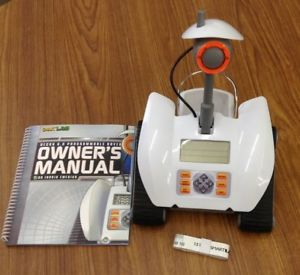
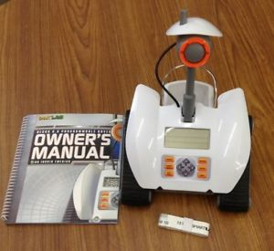

I like to play flute. I have played for school from 6th grade to 9th grade. I enjoy it very much because it is often relaxing. I still play occasionally when I have time to. I took Martial Arts Lessons at Kenpo Academy (karate) from 2nd grade to 6th grade. I also participated in the Skyhawk Summer Sports Camps (to play baseball, basketball, and soccer) in elementary school I also enjoy to playing tennis and swimming. I played tennis at Tenacity for several years in elementary school. More recently, I played on the South High Community School tennis team last year in 10th grade. I started swimming lessons at Worcester Fitness in 2nd grade then eventually took swimming lessons at the YWCA at 1 Salem Street. I finished the swimming lessons, and I still enjoy swimming today. In fact, I swim with my brother every Sunday. We used to swim at YWCA, but now we swim at the YMCA at 75 Shore Drive, Worcester, MA

I also enjoy playing board games like chess, checkers, and monopoly with my younger brother.

 

My brother and I have also programmed an Arduino (C programming), done coding in the Python programming language), and programmed a toy rover. We also have a solar robot kit that has a manual on how to make 14 configurations of parts for the solar robot.

I also enjoy walking in the park and reading. In elementary school, I read lots of books from the Worcester Public Library